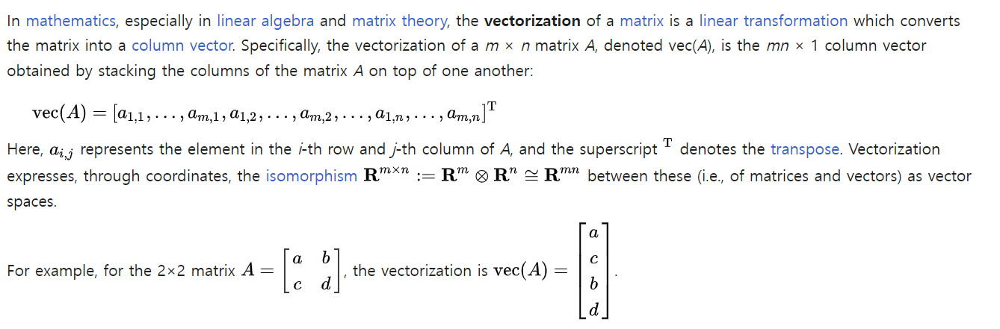
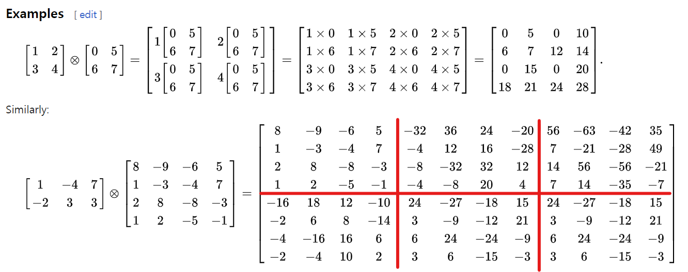
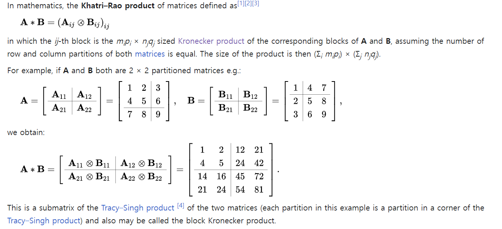
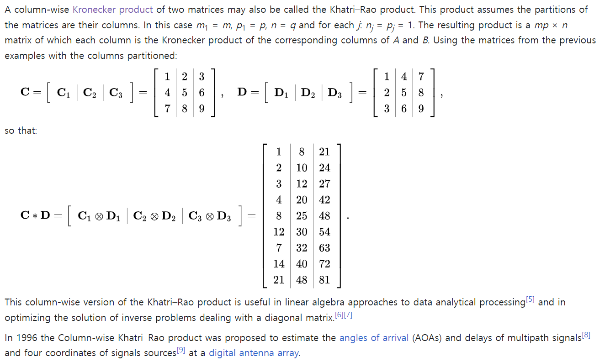
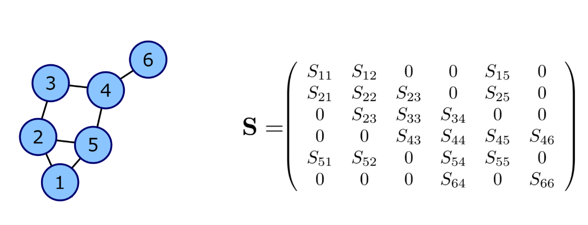

Vectorization (mathematics)

(예제)
- \(2\times2\) matrix \(\bf{A}\)가 \(4\times1\)의 컬럼벡터로 변한 것을 확인할 수 있다.
Kronecker product
크로네커곱의 정의는 아래와 같다.
\[{\bf A} \otimes {\bf B} =\begin{bmatrix} a_{11}{\bf B} & a_{12}{\bf B} & \dots & a_{1m}{\bf B} \\ a_{21}{\bf B} & a_{22}{\bf B} & \dots & a_{2m}{\bf B} \\ \dots & \dots & \dots & \dots \\ a_{n1}{\bf B} & a_{n2}{\bf B} & \dots & a_{nm}{\bf B} \\ \end{bmatrix}\]
두 행렬 \({\bf A}_{m\times n}\), \({\bf B}_{p\times q}\)의 크로네커곱 \({\bf A}\otimes {\bf B}\)의 차원은 \(mp \times nq\) 가 된다. 계산예시는 아래와 같다.

크로네커곱에 대한 성질들이 위키에 많이 있으니 참고하면 좋다.
(예제1)
4×4 Matrix{Int64}:
0 5 0 10
6 7 12 14
0 15 0 20
18 21 24 28(예제2)
8×12 Matrix{Int64}:
8 -9 -6 -5 -32 36 24 20 56 -63 -42 -35
1 -3 -4 7 -4 12 16 -28 7 -21 -28 49
2 8 -8 -3 -8 -32 32 12 14 56 -56 -21
1 2 -5 -1 -4 -8 20 4 7 14 -35 -7
-16 18 12 10 24 -27 -18 -15 24 -27 -18 -15
-2 6 8 -14 3 -9 -12 21 3 -9 -12 21
-4 -16 16 6 6 24 -24 -9 6 24 -24 -9
-2 -4 10 2 3 6 -15 -3 3 6 -15 -3Khatri-Rao product
카트리-라오곱은 매트릭스 \(\bf{A}\)와 \(\bf{B}\)가 같은 차원의 블락매트릭스로 정의될 때 각 서브매트릭스의 크로네커 곱으로 정의된다. 정의와 계산예시는 아래와 같다.

또 다른 계산예시는 아래와 같다. 이 예제는 중요하니까 직접 구현해보자.
Column-Wise Kronecker product

(예제1)
Julia 문법
hcat: The hcat() is inbuilt function in julia which is used to concatenate the given arrays along dimension 2.
5×3 Matrix{Int64}:
5 1 2
10 3 4
15 5 6
20 7 8
25 9 10\(\bf{C}*\bf{D} = [C_1\otimes D_1 | C_2 \otimes D_2 | C_3 \otimes D_3]\)
9×3 Matrix{Int64}:
1 8 21
2 10 24
3 12 27
4 20 42
8 25 48
12 30 54
7 32 63
14 40 72
21 48 81이건 자주 쓸일이 있을 것 같으니까 함수로 저장하자.
#3 (generic function with 1 method)그래프 표현
아래의 그림을 살펴보자.

오른쪽 \(\bf S\)는 무시하고 왼쪽의 그래프만 살펴보자. 이 그림에는 \(6\)개의 노드가 있고 각각의 노드에는 저 마다의 연결구조를 가진다. 이러한 연결구조는 \(\bf{G} = (\bf{N},\bf{E})\)으로 표현할 수 있는데 여기에서 \(\bf{N}\)은 노드들의 집합이고, \(\bf{E}\)는 엣지1들의 집합니다. 보통 \(\cal E\)는 복잡하므로 연결정보를 매트릭스 \(\bf{E}\)로 표현하는데 이러한 \(\bf{E}\)를 인접행렬이라고 부른다. 인접행렬의 각 원소는 \(E_{ij}= \begin{cases} 1 & (i,j) \in {\cal E} \\ 0 & o.w \end{cases}\) 와 같이 정의한다. 이 그림의 경우 \({\cal N}\) 와 \({\cal E}\), \({\bf E}\) 는 아래와 같다.
\(\cal N = \{1, 2, 3, 4, 5, 6\}\)
\({\bf E}=\begin{bmatrix} 0 & 1 & 0 & 0 & 1 & 0 \\ 1 & 0 & 1 & 0 & 1 & 0\\ 0 & 1 & 0 & 1 & 0 & 0 \\ 0 & 0 & 1 & 0 & 1 & 1 \\ 1 & 1 & 0 & 1 & 0 & 0 \\ 0 & 0 & 0 & 1 & 0 & 0 \end{bmatrix}\)
\({\cal E} = \{(i,j) : E_{ij}=1 \}\)
GSO (Graph Shift Operator)
후에 자세히 서술하겠지만 전통적인 시계열분석기법을 그래프신호로 확장하기 위해서는 단지 퓨리에변환 대신에 그래프퓨리에 변환을 사용하면 된다. 즉 퓨리에변환을 일반화한 그래프퓨리에 변환을 잘 정의하면 된다.
전통적인 신호처리 영역에서의 퓨리에변환은 시계열자료의 인접성을 의미하는 행렬 \(\bf{B}\)2의 고유행렬의 켤레전치로 정의할 수 있다. 이를 이용하면 그래프 퓨리에변환은 그래프자료의 인접성을 의미하는 행렬3의 고유행렬의 켤레전치로 정의할 수 있음을 유추할 수 있다. 즉, 비유클리드 자료에서도 \(\bf{B}\)에 대응하는 어떠한 매트릭스가 정의되어야 하는데 (그리고 이 매트릭스는 그래프자료의 인접성에 대한 정보가 있어야 한다.) 이 매트릭스를 \(\bf{S}\)라고 정의하고 graph shift operator (GSO) 라고 이름 붙인다.
주어진 그래프 \(\cal{G} = (\cal{N}, \cal{E})\)에 대하여 GSO \(\bf S\)는 \(\bf{E} + \bf{I}\)의 값이 1인 영역에만 값이 있는 어떠한 행렬이다. 다시 아래의 그림을 생각하여 보자.

왼쪽 그래프의 GSO는 오른쪽과 같은 행렬 \(\bf S\)가 된다. 이제 \(\bf S\)의 고유벡터행렬을 구한 뒤에 그것의 켤레전치를 \(\bf{GFT}\) 행렬로 정의하면 될 것 같다.문제는 “\(\bf{S}\)의 고유벡터행렬이 항상 존재하는가?”인데, 사실 이게 항상 존재한다는 보장이 없다. 즉 \(\bf{S}\)의 고유벡터 행렬이 존재 안할 수도 있다. 따라서 GSO \(\bf{S}\)가 고유분해가능하다는 조건이 추가적으로 필요한데 이러한 조건을 만족하는 GSO를 normal GSO라고 부른다. 우리는 당연히 normal GSO에 대해서만 관심이 있으므로 앞으로 특별한 언급이 없는 한 GSO는 모두 normal GSO라고 가정한다.
12.2.1 Power Spectral Density
(넘어가….)
12.2.3 Power Spectral Density Estimators
(일단 패스…)
12.3.1 Nonparametric PSD estimators
(일단 패스…)
Summary
정상시계열을 분석한흔 두 가지 흐름, ACF와 PSD
전통적인 분석방법
클래식한 정상시계열은 유한차수의 ARMA로 근사할 수 있음이 알려져 있다. 유한차수의 ARMA의 계수 \(p,q\)를 적절하게 추정하기 위해서는 시계열 \(\bf x\)를 SACF plot 혹은 SPACF plot을 이용하면 된다. 이때 SACF 혹은 SPACF의 그림을 살펴보고 적절한 모형을 선택하기 위해서는 유한차수 ARMA의 이론적 ACF의 모양을 알면 되는데, 이를 바꾸어서 말하면 결국 정상시계열 \(\bf x\)의 모든 정보는 ACF에 들어가있다는 의미가 된다. 즉 정상시계열은 ACF만 잘 추정함녀 모든 것이 해결된다.
그런데 ACF의 모든 정보는 다시 아래의 행렬에 들어있다.
\[{\bf C}_{\bf x}=\mathbb{E}[{\bf x}{\bf x}^T]\]
여기에는 \(\bf x\)는 relization이 아니라 확률벡터를 의미함을 유의하자. 따라서 정상시계열의 경우 \(\bf{C}_x\)를 잘 추정하면 모든것이 잘 해결된다고 생각하면 된다.
참고: 정상시계열의 경우 ACF 만 정확하게 알아도 (반대로 PACF만 정확하게 알아도) 이론상 모든 모형을 특정할 수 있다. 즉 정상시계열의 모형을 특정하기 위해서는 ACF plot, PACF plot 하나만 있어도 충분하다. (Wold’s Thm은 떠올리면 모든 정상시계열은 무한MA로 유니크하게 표현할 수 있는데, 이는 PACF plot을 가지고 모든 정상시계열을 유니크하게 특정할 수 있다는 것을 의미한다) 다만 좀 더 모형을 특정하는 과정을 용이하게 하기 위해서 실전에서는 SACF plot 과 SPACF plot 을 함께 보는 것이 유리하다.
(예제) AR(1) 모형
왜 ACF의 모든 정보를 \(\bf{C}_x\) 로부터 알 수 있는지 코드를 통하여 실습하여 보자.
아래의 모형을 가정하자.
\[x_t = 0.5x_{t-1} + \epsilon_t\]
여기에서 \(\epsilon_t\)는 서로 독립인 표준정규분포를 따른다. 이 모형에서 길이가 100인 시계열을 임으로 발생시키자.
모형에서 생성된 하나의 시계열을 시각화하면 아래와 같다.
lag=1일 경우 시계열의 SACF를 계산하면 아래와 같다.
99-element Vector{Float64}:
2.763927872349466
-2.648382063879747
7.5560713885953215
14.538881990615415
0.520289725235592
-0.02893028852363918
-0.08713887236919443
0.664714967484797
1.7558767596344267
0.8198605801110912
0.03431855113914528
-0.01819122449351602
-0.5411309265124012
⋮
0.8627760724036734
1.4665215311182225
-0.11299501148861134
0.03195980896825844
0.0699424007664186
0.009424426205167391
0.07855903160522548
-0.8085731251113174
-0.17558999208627857
-0.4339226145863137
3.357684099650187
1.4577818358298857- 이 계산결과는 각 \(t\)에 대하여 \(x_{t-1}x_t\)를 계산한 것과 같다.
이 수열들의 평균은 아래와 같다.
- 이 계산결과는 \(\frac{1}{99}\sum_{t=2}^{100}x_{t-1}x_t\)를 계산한 것과 같다.
이론적인 값인 0.5 근처의 값이 잘 나옴을 알 수 있다???? 뭔가 잘못했나.. \(0.5\)근처라고 해도 되나..?
lag=2일 경우도 마찬가지로 구할 수 있다.
그런데 이러한 숫자들은 \(\bf{x}\bf{x}^\top\)를 이용해서도 구할 수 있다.
100×100 Matrix{Float64}:
4.51193 2.76393 -4.32331 … 3.01347 5.02729 1.30834
2.76393 1.69313 -2.64838 1.846 3.07963 0.801466
-4.32331 -2.64838 4.14257 -2.8875 -4.81713 -1.25364
-7.88573 -4.83066 7.55607 -5.26681 -8.78647 -2.28665
-8.31861 -5.09584 7.97085 -5.55593 -9.26879 -2.41218
-0.2822 -0.172871 0.270402 … -0.188479 -0.314433 -0.0818304
0.46255 0.28335 -0.443213 0.308933 0.515384 0.134127
-0.849993 -0.520691 0.814459 -0.567703 -0.947083 -0.246476
-3.52843 -2.16146 3.38093 -2.35661 -3.93146 -1.02315
-2.2453 -1.37543 2.15143 -1.49961 -2.50176 -0.651077
-1.64751 -1.00924 1.57864 … -1.10036 -1.83569 -0.477734
-0.093986 -0.0575742 0.0900569 -0.0627724 -0.104721 -0.0272534
0.873295 0.534965 -0.836787 0.583266 0.973046 0.253232
⋮ ⋱
2.12852 1.3039 -2.03954 1.42162 2.37165 0.617215
3.10866 1.90431 -2.9787 2.07624 3.46374 0.901428
-0.164002 -0.100465 0.157146 … -0.109535 -0.182735 -0.0475562
-0.87926 -0.53862 0.842503 -0.58725 -0.979692 -0.254962
-0.35891 -0.219862 0.343905 -0.239712 -0.399905 -0.104074
-0.118476 -0.0725766 0.113523 -0.0791293 -0.132009 -0.034355
-2.99176 -1.8327 2.86669 -1.99817 -3.33349 -0.86753
1.21942 0.746999 -1.16845 … 0.814443 1.35871 0.353601
-0.649691 -0.397989 0.622531 -0.433923 -0.723901 -0.188393
3.01347 1.846 -2.8875 2.01267 3.35768 0.873828
5.02729 3.07963 -4.81713 3.35768 5.60153 1.45778
1.30834 0.801466 -1.25364 0.873828 1.45778 0.379384여기에서 각 원소들이 의미하는 바는 아래와 같다.
- 대각선의 원소: \(x_t^2, \space t=1,2,\dots,100\)을 의미
- 대각선 한칸 위, 혹은 한칸 아래: \(x_{t-1}x_t,\space t=2,3,\dots,100\)을 의미
- 대각선 두칸 위, 혹은 두칸 아래: \(x_{t-1}x_t, \space t=3,4,\dots 100\)을 의미
5-element Vector{Float64}:
2.1241294211140476
1.301205023044152
-2.0353303414736996
-3.712454550804897
-3.9162451126743741×100 adjoint(::Vector{Float64}) with eltype Float64:
2.12413 1.30121 -2.03533 -3.71245 … 1.41869 2.36675 0.615941\(\begin{bmatrix} \end{bmatrix}\)
(4.511925797642299, 1.6931345119953323, 4.142569598923447)lag1